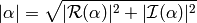
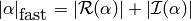
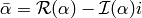

Environment¶
Set up and clean up¶
- void Initialize(int& argc, char**& argv)¶
Initializes Elemental and (if necessary) MPI. The usage is very similar to MPI_Init, but the argc and argv can be directly passed in.
#include "elemental.hpp" int main( int argc, char* argv[] ) { elem::Initialize( argc, argv ); // ... elem::Finalize(); return 0; }
- void Finalize()¶
Frees all resources allocated by Elemental and (if necessary) MPI.
- bool Initialized()¶
Return whether or not Elemental is currently initialized.
Blocksize manipulation¶
- int Blocksize()¶
Return the currently chosen algorithmic blocksize. The optimal value depends on the problem size, algorithm, and architecture; the default value is 128.
- void SetBlocksize(int blocksize)¶
Change the algorithmic blocksize to the specified value.
- void PushBlocksizeStack(int blocksize)¶
It is frequently useful to temporarily change the algorithmic blocksize, so rather than having to manually store and reset the current state, one can simply push a new value onto a stack (and later pop the stack to reset the value).
- void PopBlocksizeStack()¶
Pops the stack of blocksizes. See above.
Scalar manipulation¶
- Z Abs(const Z& alpha)¶
Return the absolute value of the real variable
 .
.
- Z Abs(const Complex<Z>& alpha)¶
Return the absolute value of complex
:
- Z FastAbs(const Z& alpha)¶
Same as :cpp:function::Abs: for real
.
- Z FastAbs(const Complex<Z>& alpha)¶
Return a cheaper norm of the complex
:
- Z RealPart(const Z& alpha)¶
Return the real part of the real variable
, which is
itself.
- Z RealPart(const Complex<Z>& alpha)¶
Return the real part of the complex variable
.
- Z ImagPart(const Z& alpha)¶
Return the imaginary part of the real variable
, which is
trivially zero.
- Z ImagPart(const Complex<Z>& alpha)¶
Return the imaginary part of the complex variable
.
- Z Conj(const Z& alpha)¶
Return the complex conjugate of the real variable
,
which is simply .
- Complex<Z> Conj(const Complex<Z>& alpha)¶
Return the complex conjugate of the complex variable
,
- class Base<F>¶
- type type¶
The underlying real datatype of the (potentially complex) datatype F. For example, typename Base<Complex<double> >::type and typename Base<double>::type are both equivalent to double. This is often extremely useful in implementing routines which are templated over real and complex datatypes but still make use of real datatypes.
Custom datatypes¶
- type byte¶
typedef unsigned char byte;
- class Complex<R>¶
- type R BaseType¶
- R real¶
The real part of the complex number
- R imag¶
The imaginary part of the complex number
- Complex()¶
This default constructor is a no-op.
- Complex(R a)¶
Construction from a real value.
- Complex(R a, R b)¶
Construction from a complex value.
- Complex(const std::complex<R>& alpha)¶
Construction from an std::complex<R> instance.
- Complex<R>& operator=(const R& alpha)¶
Assignment from a real value.
- Complex<R>& operator+=(const R& alpha)¶
Increment with a real value.
- Complex<R>& operator-=(const R& alpha)¶
Decrement with a real value.
- Complex<R>& operator*=(const R& alpha)¶
Scale with a real value.
- Complex<R>& operator/=(const R& alpha)¶
Divide with a real value.
- Complex<R>& operator=(const Complex<R>& alpha)¶
Assignment from a complex value.
- Complex<R>& operator+=(const Complex<R>& alpha)¶
Increment with a complex value.
- Complex<R>& operator-=(const Complex<R>& alpha)¶
Decrement with a complex value.
- Complex<R>& operator*=(const Complex<R>& alpha)¶
Scale with a complex value.
- Complex<R>& operator/=(const Complex<R>& alpha)¶
Divide with a complex value.
- Complex<R> operator+(const Complex<R>& alpha, const Complex<R>& beta)¶
(complex,complex) addition.
- Complex<R> operator+(const Complex<R>& alpha, const R& beta)¶
(complex,real) addition.
- Complex<R> operator+(const R& alpha, const Complex<R>& beta)¶
(real,complex) addition.
- Complex<R> operator-(const Complex<R>& alpha, const Complex<R>& beta)¶
(complex,complex) subtraction.
- Complex<R> operator-(const Complex<R>& alpha, R& beta)¶
(complex,real) subtraction.
- Complex<R> operator-(const R& alpha, const Complex<R>& beta)¶
(real,complex) subtraction.
- Complex<R> operator*(const Complex<R>& alpha, const Complex<R>& beta)¶
(complex,complex) multiplication.
- Complex<R> operator*(const Complex<R>& alpha, R& beta)¶
(complex,real) multiplication.
- Complex<R> operator*(const R& alpha, const Complex<R>& beta)¶
(real,complex) multiplication.
- Complex<R> operator/(const Complex<R>& alpha, const Complex<R>& beta)¶
(complex,complex) division.
- Complex<R> operator/(const Complex<R>& alpha, const R& beta)¶
(complex,real) division.
- Complex<R> operator/(const R& alpha, const Complex<R>& beta)¶
(real,complex) division.
- Complex<R> operator+(const Complex<R>& alpha)¶
Returns alpha.
- Complex<R> operator-(const Complex<R>& alpha)¶
Returns negative alpha.
- bool operator==(const Complex<R>& alpha, const Complex<R>& beta)¶
(complex,complex) equality check.
- bool operator==(const Complex<R>& alpha, const R& beta)¶
(complex,real) equality check.
- bool operator==(const R& alpha, const Complex<R>& beta)¶
(real,complex) equality check.
- bool operator!=(const Complex<R>& alpha, const Complex<R>& beta)¶
(complex,complex) inequality check.
- bool operator!=(const Complex<R>& alpha, const R& beta)¶
(complex,real) inequality check.
- bool operator!=(const R& alpha, const Complex<R>& beta)¶
(real,complex) inequality check.
- std::ostream& operator<<(std::ostream& os, Complex<R> alpha)¶
Pretty prints alpha in the form a+bi.
- type scomplex¶
typedef Complex<float> scomplex;
- type dcomplex¶
typedef Complex<double> dcomplex;
- type UnitOrNonUnit¶
An enum for specifying either UNIT or NON_UNIT; typically used for stating whether or not a triangular matrix’s diagonal is explicitly stored (NON_UNIT) or is implicitly unit-diagonal (UNIT).
- type Orientation¶
An enum for specifying whether a matrix, say
 , should be implicitly
treated as (NORMAL),
, should be implicitly
treated as (NORMAL),  (ADJOINT), or
(ADJOINT), or  (TRANSPOSE).
(TRANSPOSE).
- type LeftOrRight¶
An enum for specifying LEFT or RIGHT.
- type ForwardOrBackward¶
An enum for specifying FORWARD or BACKWARD.
- type UpperOrLower¶
An enum for specifying LOWER or UPPER (triangular).
- type VerticalOrHorizontal¶
An enum for specifying VERTICAL or HORIZONTAL.
- type Distribution¶
An enum for specifying the distribution of a row or column of a distributed matrix:
- MC: Column of a matrix distribution
- MD: Diagonal of a matrix distribution
- MR: Row of a matrix distribution
- VC: Column-major vector distribution
- VR: Row-major vector distribution
- STAR: Redundantly stored
- type GridOrder¶
An enum for specifying either a ROW_MAJOR or COLUMN_MAJOR ordering; it is used to tune one of the algorithms in HermitianTridiag which requires building a smaller square process grid from a rectangular process grid, as the ordering of the processes can greatly impact performance. See SetHermitianTridiagGridOrder.
Custom exceptions¶
- class SingularMatrixException¶
An extension of std::runtime_error which is meant to be thrown when a singular matrix is unexpectedly encountered.
- SingularMatrixException(const char* msg="Matrix was singular")¶
Builds an instance of the exception which allows one to optionally specify the error message.
throw elem::SingularMatrixException();
- class NonHPDMatrixException¶
An extension of std::runtime_error which is meant to be thrown when a non positive-definite Hermitian matrix is unexpectedly encountered (e.g., during Cholesky factorization).
- NonHPDMatrixException(const char* msg="Matrix was not HPD")¶
Builds an instance of the exception which allows one to optionally specify the error message.
throw elem::NonHPDMatrixException();
- class NonHPSDMatrixException¶
An extension of std::runtime_error which is meant to be thrown when a non positive semi-definite Hermitian matrix is unexpectedly encountered (e.g., during computation of the square root of a Hermitian matrix).
- NonHPSDMatrixException(const char* msg="Matrix was not HPSD")¶
Builds an instance of the exception which allows one to optionally specify the error message.
throw elem::NonHPSDMatrixException();
Call stack manipulation¶
Note
The following call stack manipulation routines are only available in non-release builds (i.e., PureDebug and HybridDebug) and are meant to allow for the call stack to be printed (ala DumpCallStack) when an exception is caught.
- void PushCallStack(std::string s)¶
Push the given routine name onto the call stack.
- void PopCallStack()¶
Remove the routine name at the top of the call stack.
- void DumpCallStack()¶
Print (and empty) the contents of the call stack.
Default process grid¶
- Grid& DefaultGrid()¶
Return a process grid built over mpi::COMM_WORLD. This is typically used as a means of allowing instances of the DistMatrix<T,MC,MR> class to be constructed without having to manually specify a process grid, e.g.,
// Build a 10 x 10 distributed matrix over mpi::COMM_WORLD elem::DistMatrix<T,MC,MR> A( 10, 10 );